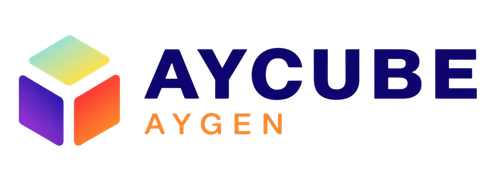
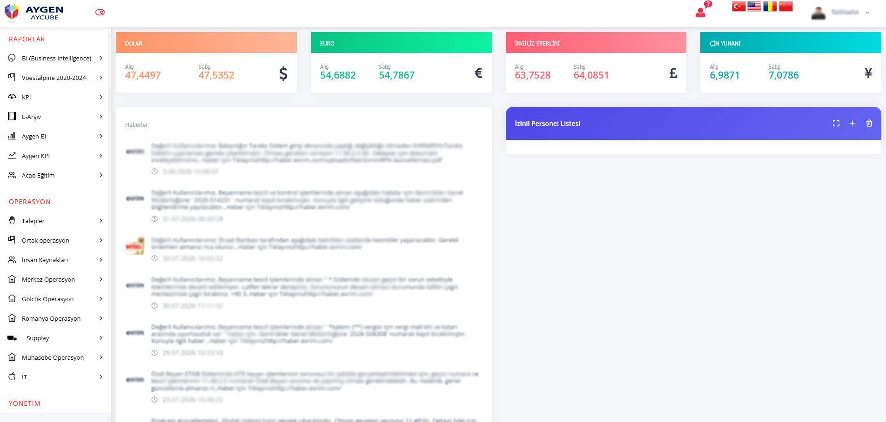
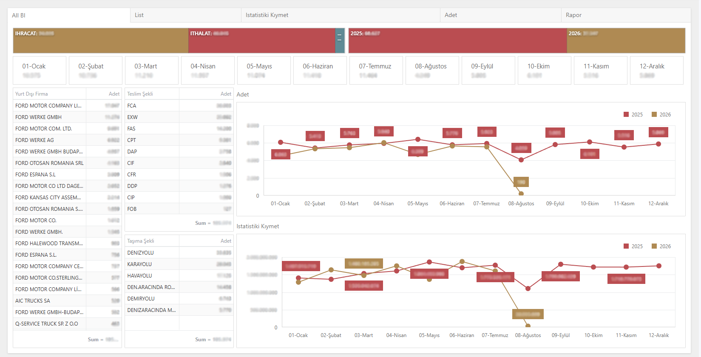

-
Ford operasyonları için tek dijital omurga.
29 proje, 37 dijital iş akışı ve saha operasyonlarını; entegrasyon, otomasyon ve görünürlükte birleştiren Aycube ekosistemi.
AYGEN ITFORD OTOSAN2026
YÖNETİCİ AKIŞI
Değer beş eksende büyüyor.
Ekip ve iş birliğinden platform, otomasyon, güvenlik ve sürdürülebilir sonuca uzanan tek hikâye.
IT EKİBİMİZ
Alanında Uzman IT Kadromuz
Farklı uzmanlıklarıyla Ford operasyonlarına uçtan uca dijital çözümler sunan IT ekibimiz.
İŞ BİRLİĞİ
Ortak Sürdürülebilir Sonuç
İhtiyaç, analiz, geliştirme ve geri bildirim tek teslimat ritminde birleşir; Ford operasyonlarında karar süresi kısalır, güvenilir ve anlamlı veriye daha hızlı ulaşılır.
-
ORTAK GELİŞTİRME AKIŞI6 adım · tek teslimat ritmi
01
01 / YAKIN ÇALIŞMA
Ford ekipleriyle ortak çalışma masası
İhtiyaçlar Ford operasyon ekipleriyle doğrudan ele alınır; hedef, kapsam ve öncelikler birlikte netleştirilir.
AYCUBE & PROJELER
29 proje, tek platform mantığıyla ölçekleniyor.

AYCUBE NEDİR?
İş akışları, entegrasyonlar ve raporlamayı tek çatı altında toplayan modüler platform.
- Otomatik bildirim ve raporlarla anlık takip
- Denetlenebilir kayıt ve uçtan uca izlenebilirlik
- Yeni iş ihtiyaçlarına uyarlanabilen modüler mimari

Aycube Ana EkranPlatform giriş noktası, menüler ve haber akışı

All BIYönetim için canlı KPI ve istatistiki özetler
29Toplam Ford Projesi5Proje Grubu
OTOMAIL NEDİR?
37 rapor. Güvenli, otomatik rapor teslimatı.
Otomail; Ford Otosan ekipleri için hazırlanan 37 operasyonel raporu belirlenen zamanlarda üreten, doğrulayan ve yalnızca yetkili alıcılara güvenle ulaştıran otomatik rapor dağıtım servisidir.
Güvenli ve izlenebilir dağıtım
Raporlar yalnızca tanımlı Ford Otosan alıcılarına iletilir; teslim kayıtları, hata uyarıları ve yeniden denemeler izlenebilir biçimde tutulur.
Ford Otosan’a sağlanan yaklaşık gönderim hacmi
OTOMAIL SERVICE
37 Rapor · Hazır
RAPOR
01Üret
02Güvenli Doğrula
03Ford’a Dağıt
Ford Haftalık Eksik Evrak Raporu01 / 37 · İthalat & Beyanname
Hazır
Ford Eksik Evrak Raporu02 / 37 · İthalat & Beyanname
Sırada
Detaylı İthalat Raporları03 / 37 · İthalat & Beyanname
Sırada
Ford Beyanname Raporu04 / 37 · İthalat & Beyanname
Sırada
Ford Serbest Dolaşıma Giriş Listesi YP Raporu05 / 37 · İthalat & Beyanname
Sırada
ÖZEL PROJELER
Özel ihtiyaç, modüler çözüme dönüşüyor.
Her çözüm gerçek bir operasyon temasına odaklanır: belge, gümrük kontrolü veya operasyonel akış.
Romanya
SUPALAN
Sahanın ritmi, tek ekranda görünür ve yönetilebilir.
Supalan; araç ve şoför bilgilerinin toplandığı, plaka tanıma ve 40 kameralı güvenlik altyapısıyla giriş–çıkışların kontrol edildiği, tüm saha hareketlerinin Aycube’da kayıt altında tutulduğu dijital saha yönetimidir.
Veriler örnektir.
SaatPlakaİşlemDurum
10:4234 FOT 726Araç İthalatİşlemde
10:3641 AY 1955Yedek ParçaBekliyor
10:2834 GEN 071Araç İhracatTamamlandı
✓
Kayıt eklendiÖrnek veri güncellendi
AYGEN IT - FORD OTOSAN
Veriden aksiyona.Birlikte geleceğe.
-